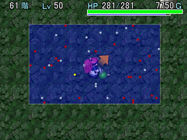
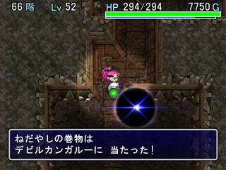

| 风来之西林外传
～女剑士飞鸟见参～
◆ ドラスの试练99F突破攻略 ◆
作者：kenyo
『风来人绝对领域』版权所有，禁无断转载！
Chapter1：ドラスの试练的特征
kenyo语：ドラスの试练不会捡到任何武器和盾，在商店内也仅是出现极少的几种装备，迷宫内能捡到的饭团、合成之壶、杖和卷物较多，驱使杖和卷物杀敌来不断前进就是这个迷宫的最大特色。在7个试练中，这个迷宫难度仅次于カカ・ル`の试练，在PC版所有迷宫中难度排第三位【★★★★☆】，4.5星。当然，这是基于不带NPC的前提上，如果带NPC的话，难度还要降低许多。以下的攻略是不带NPC突破99F的心得，上级者的历程。
Chapter2：主力装备的选择（重要）
这个迷宫虽然有很多合成之壶，但无法捡到武器和盾，商店中只有ゴムバンの盾、皮の盾、やまびこの盾出售，由于这些盾防御力都很低，地惠之卷物的出现率也较低，就算用上白纸卷物来写“地惠”也影响不大，单纯地靠合成的那点可怜的附加值，要突破几乎是不可能的，所以这个迷宫的盾基本“无视”，要突破ドラスの试练99F，一定要将突破试练必须要使用的主力武器合成好。商店内售卖的武器有こんぼう、L、衰弱の枝，杀死ミノタウロス有一定几率得到ミノタウロスの斧、杀死アイアンヘッド则有一定几率得到アイアンヘッドの^。ミノタウロスの斧的攻击力虽然高，但既然无法装备盾，还不如用アイアンヘッドの^更好，起码有3次先制攻击，加上弓箭射击，敌人根本就无法近身，再配合衰弱の枝，效果绝大。比如说LV3的怪物シハン，被带【衰】印的アイアンヘッドの^攻击3次后，其苟延残喘的反击也只是令飞鸟损失30点左右的HP。下面详细说明一下武器必须要合成的印。
主力武器：
アイアンヘッドの^，强度最好＋9以上，即使力量值为0，这种强度也是能够破关的。
印：
【衰】素材：衰弱の枝。每攻击敌人一次就会令其攻防力下降且HP不断减少，最为重要的印，此印无法重复合成。
【金】素材：メッキの物。除了LV4的ドドロ，LV3以下的污泥怪基本无视。
【眠】素材：バクスイの物。攻击时一定几率使敌睡眠，可以节约杖的使用次数，无法重复合成。
【会】素材：ミノタウロスの斧。攻击时一定几率会心一击，与“眠”配合，大多数情况敌人都无法近身。此印无法重复合成。
【R】素材：Reの物。攻击时识别敌人正体，由于迷宫后期有天狗变成LV3怪物的情况出现，合这个印可以决定是否需要使用杖。
kenyo注：以上的印必须合成，否则无法突破99F，以下的印可选。
【祓】素材：おはらいの物。使武器不会被诅咒，持有卷物的场合，合不合都无关紧要。
【】素材：各种饭团。迷宫内的饭团满地都是，吃得都撑死了，个人认为不需要合这个印。
【力】素材：ちからの草。杀死プルン怪物随机入手，增加武器基本攻击力2点。
【幸】素材：しあわせ草。杀死プルリン怪物随机入手，增加杀死怪物后的经验值。
主力腕轮：
〖透の腕〗这是最重要的腕轮，持有此腕轮才能发挥アイアンヘッドの^的威力，一定要确保。
〖よくみえの腕〗也是非常重要的腕轮，必须确保，可看到透明的怪物和机关，遇上靠近墙壁的弓箭机关便可以收集弓箭。
〖身がわりの腕〗复活用，通常在道具栏放1个，危急时装备。
〖まもりの腕〗令伤害减少25%，建议在迷宫后期装备，迷宫初期找到时可以留着。
Chapter3：杖的识别和重要度选择（重要）
kenyo语：杖的识别在游戏初期非常重要，由于不带NPC，所以只能对怪物使用，危险度增加不少。具体识别方法是，与怪物相隔N格远使用未识别的杖，然后根据出现的现象来识别，最后给该杖写上对应的名字，详见下表。（当然，杖的识别不局限于现象识别，还可以利用识别之壶以及合成来识别，相信大家都晓得的啦）
 |
|
杖使用后的现象 |
确认该杖为 |
重要度 |
|
|
| 敌人级别提升 |
しあわせの杖 |
★★★ |
|
| 使用的怪物若是LV1就无现象，承受敌人攻击之后如果敌没有受到同样伤害，则该杖就是 |
不幸の杖 |
★★★★★ |
|
| 与敌交换位置 |
鏊替えの杖 |
★★★ |
|
| 敌被吹飞，伤害为5点 |
吹きwばしの杖 |
★★★ |
|
| 无法发出魔法光束 |
ばぬ先の杖 |
★★★ |
|
| 敌伤害为10点 |
トンネルの杖 |
★★ |
|
| 正前方出现火柱 |
火ばしらの杖 |
★★ |
|
| 敌头上出现“封”标记 |
封印の杖 |
★★★★★ |
|
| 敌头上出现“スカ”标记 |
空振りの杖 |
★★★★★ |
|
| 敌头上出现“地藏菩萨”的标记 |
g足の杖 |
★★★★ |
|
| 敌走路的步速加快 |
倍速の杖 |
★★ |
|
| 敌消失（此时最好向后撤退，过一定回合等敌人再度出现） |
透明の杖 |
★★★ |
|
| 发出雷电 |
いかずちの杖 |
★★ |
|
| 敌瞬间飞走 |
一rしのぎの杖 |
★★★★ |
|
| 敌变成假飞鸟，头上有个“封”字 |
身代わりの杖 |
★★★★★★ |
|
| 敌不能动弹 |
金`りの杖 |
★★★★★ |
|
| 自身HP与敌人的HP互换（这个比较危险，小心） |
入れ替えの杖 |
★ |
|
| 听到回复HP特有的音效，与吃“弟切草”的音效一样 |
回亭握 |
★ |
|
| 敌人被拖至飞鸟身边 |
引き寄せの杖 |
★★ |
|
| 无现象，故意让敌人攻击一下，如果敌人也受到同样伤害，则该杖就是 |
痛み分けの杖 |
★★★ |
|
| 敌人头上出现“爆弹”标记 |
ばくだんの杖 |
★★ |
|
| 再出现3～4个敌人（这个也比较危险，可能需要用其他杖来解困） |
けものみちの杖 |
★ |
|
| 敌头上冒烟（发怒的烟） |
イカリの杖 |
★★ |
|
| 敌头上冒烟且步速加快（可使用封印杖来解困） |
オオイカリの杖 |
★★ |
|
补充：吹きwばしの杖和火ばしらの杖的连用COMBO相信大家都知道了，主要用于在游戏初期快速升级的。另外，以上的负面杖如果对反射魔法的うしわか丸系怪物使用的话，就能发挥正面的效果，比如说大怒之杖，就可以令飞鸟保持10回合2倍速状态且50回合内攻击力2倍。再一个就是透明之杖的活用，在房间内对怪物使用后该怪物会变为“飘忽不定”的状态（跟南瓜头的移动方式一样），在此状态怪物是不会使用特技的（能分裂的怪物还是会分裂），有“よくみえの腕”就可以轻松解决敌人。最后奉上利用合成解咒的方法，如果捡到的杖是诅咒状态，把该杖先放入合成之壶，再放入使用次数更多的相同杖来合成，就能解除原来杖的诅咒状态，利用怪盗合成不知能否解除，偶未试过。
Chapter4：卷物和壶的选择
kenyo语：根绝之卷物和圣域之卷物是最重要的卷物，一定要确保。转写之卷物捡到时可以留着，视具体情况而进行转写，比如说主力武器附加值还未达到＋9以上时，可以对天惠之卷物转写以增加武器强度。游戏后期通常是对根绝或圣域进行转写的。至于白纸卷物，如果游戏初期没有找到必要的异种合成素材，就只能用白纸来写并进行合成了，毕竟装备的合成是最优先的（偶用了3个白纸来合成【眠金R】印，汗）。后期的白纸主要也是应用在圣域和根绝上，或是用于修复腕轮。メッキの物这个修复腕轮必备的卷物一定要有，不多说了。
壶的选择就简单了，尽可能收集多点保存之壶，能带多少杖就靠它了，回复之壶建议最多带3个，至于合成之壶，在游戏初期可以留着合成主力武器，中期和后期捡到就马上合成杖吧，因为道具栏实在比较窘迫啊。
Chapter5：99F突破攻略杀动
1～5F
初期主要就是识别杖，如果在1～2F识别出しあわせの杖和吹きwばしの杖更可利用洞窟玛姆鲁大幅度提升LV。此阶段没什么难点，尽量不要放过任何道具，尽量将值钱的杖带在身上（即使该杖为负面效果）。
一铜村
保存之壶的重要补给地，卖光身上所有重要度不高的杖来购入保存之壶，至少要购入5个以上，巨大饭团买2～3个即可，也可以到村子左上角赌钱碰碰运气，总之身上的钱要花至100G以下，无法再做任何事为止。
6～8F
此阶段如果带NPC的话，可以利用しあわせの杖提升ぬすっトド至LV3的アイアントド，并让NPC来杀掉以收集道具，这就是著名的“トド狩猎”技巧。当然，我没有带NPC，也就无法使用这个技巧了，不过，ぬすっトド是一定要杀的，运气好的话，可以收集到ねだやしの物、透の腕、バクスイの物等等好道具。
9～14F
此阶段必须在商店内不惜一切代价购入衰弱之枝作为主武器，有多余的钱可以买个皮之盾以节省饭团。怪物方面，会诅咒的ノロ`ジョ比较麻烦，多用弓箭来辅助攻击才是上策。
15～19F
没有よくみえの腕就是不爽啊，好不容易幸运地踩到了贴近墙的弓箭机关，终于又能够收集一点弓箭了，超泪。此阶段应利用怪盗来合成必须“异种合成”的印【眠R】，其余的印以后可以用合成之壶慢慢合。此处讨厌的怪物应该是回复怪物HP的プチフェニックス，第一时间杀掉。另外还可以用しあわせの杖提升ドラゴン的等级，再配合空振りの杖可以入手大量经验值。
20～30F
此阶段主要入手アイアンヘッドの^和ミノタウロスの斧，完成主力武器的合成，当然，透视腕轮也必须入手，否则你很快就会挂在这里。我要说明一下，アイアンヘッドの^是只有杀掉アイアンヘッド才会得到的武器，LV2以上入手的几率极低。而ミノタウロスの斧则不同，杀掉LV1～LV2都能入手，LV3以上得到几率极低。
20～24F出现水路迷宫的记率很大，ケンゴウ和ジェットイノシシ最好在房间内杀掉或者配合弓箭来解决，以免身上道具掉到水里。透明的エ`テルデビル在房间内遇上时，马上退回窄道，不断攻击路口就可干掉。24F开始出现しおやだん，这家伙的分裂能力比较讨厌，绝对会降低你不少的力量值。25F开始出现LV2的スカイドラゴン和イッテツ檐，难缠的劲敌是イッテツ檐，2倍速的攻击1回合吃掉你40点HP，如果在远处的话，还没等你走近就被KO了，为此我牺牲了不少封印杖，遇上怪物房间也是不敢迎战，第一时间逃跑。
31～40F
有了透の腕和よくみえの腕的完壁配合，アイアンヘッドの^的强大开始逐渐体现出来了，运气好的话，第1击会心，未死？第2击睡眠，还未死？第3击KO！除非出现MISS，否则不会有怪物顶得住3击。对于一些HP较少的怪物，第2击之后也许就因为衰弱之枝的效果在走近飞鸟的时候挂掉了。怎么样，享受杀敌的爽快感吧！
一般情况下，多在窄道内解决敌人，大部分的窄道都比较长，可以先制攻击3次以上，对于ノロ`ジョの，如果怕MISS，可以补上1箭。在前进的同时，不要放过收集弓箭的机会，以后有大用。
41～50F
にぎり元め、洞窟マムル出现，不过它们都熬不过アイアンヘッドの^的3重攻击，不用担心道具被变成饭团。至于アイアントド，可以入手不少道具，就算分裂也可以利用其特性防止它盗取身上的道具。44F开始ファントムデビル和デビルカンガル`出现，当时我没有根绝卷物，便宜了デビルカンガル`这家伙了。不过袋鼠的出现率不高，每层也就1～2只，只要杀得快就无大碍了。秘诀：通过透视腕轮观察，在房间里绕圈的绝对是袋鼠无疑。装备着透の腕，解除よくみえの腕之后若有红点消失，那些红点必定是ファントムデビル。只要杀掉这2个怪物，其余的小怪就不放在眼里啦。46F后有不少怪盗出现，可以合成杖来解放道具栏的窘迫。
51～59F
51Fたまらんガッパ出现，由于根绝卷物是能够随机捡到的，若被河童踩在上面向你投掷，命中的话……神也救不了！解决方法有2种，1种是把身上的保存之壶都留[1]的空位，不能装满。第2种就是根绝。偶的道具栏比较窘迫，就选择了根绝。注意，在根绝河童前最好封印河童的特技，以免扔根绝的时候MISS被反扔！同时在此层出现的难缠怪物还有ノロ`ジョの母，アイアンヘッドの^的3重攻击无法解决它，必须补上1箭。虎王タイガ`ウホ`也是讨厌的家伙，一旦进入它的投掷范围，很有可能被它扔过来的怪物害得不能及时解除腕轮而导致破裂。しおかんべん也是很恐怖的敌人，不俗的攻击力以及讨厌的分裂能力都会令你随时陷入绝体绝命的境地……封印杖比较多时就不要太“葛朗台”了（若力量值已被减为0，可用发怒杖来减少分裂机会，但并不代表封印了其分裂能力）。
60～69F
自61F开始，最强的怪物投石巨猪デブ－トン登场，每次投石攻击都令飞鸟损失60～70点HP，一旦发起飙，10个飞鸟也顶不住，第一时间根绝！由于只能根绝1种怪物，所以LV3的河童又会再次出现，不过只要撑过65F就没事了，过渡时期内你祈祷河童不要捡到根绝啦。透明的ミラ`ジュデビル也在此阶段出没，小心应付，被围攻时可用ゾワゾワの卷物来解困。66F开始デビルカンガル`再次出现，与デブ－トン相比，偶还是推荐你根绝デビルカンガル`，此后的几层高速潜行，熬过70F投石巨猪就不会出现了。至于吃装备印的ドドロ，用不幸之杖可以轻松解决，但它会持续出现到80F，所以不要太滥用杖，房间内有多个ドドロ时，先让其中一个降级变成オドロ并带至窄道前让其堵住路口，这样就可以用アイアンヘッドの^解决其他ドドロ，就算其分裂也不用担心，有オドロ挡住它们无法接近，オドロ的特技和攻击基本无视的。
此阶段若遇上怪物房间最好封印チョ`キライ的特技，以免其爆发烧掉圣域。
|  |
|
|
|
飞鸟：袋鼠哥，我找你找得好辛苦啊～～～～
恶魔袋鼠（想像中）：哦，原来是美女，一定是我的FANS，找我签名的吧？ |

飞鸟：袋鼠哥，我给你带了礼物，你一定要收下！（悄悄摸出根绝卷物）
恶魔袋鼠：啥米？噢，NO，是根绝卷物！不要啊～～～我还很年轻啊～～～～！！！ |
|
|
70～79F
76F以后大量强敌出现，ベルト－ベン、メガタウロス、シハン、眠り大根、アストラルデビル、タイガ`ウホ`ン、シンロン、パオパ王`ン，HP都很高，必须配合弓箭来干掉，以前收集的弓箭此时派上大用场了。对于眠り大根和パオパ王`ン是绝对不能在房间内解决的，如果在シハン接近飞鸟时还没有干掉它，一定要确保身后没有敌人。注意以上2点其他的就无大碍了，此后开始用空振りの杖、不幸の杖和g足の杖辅助杀敌，尽量避免与怪物“直接对话”。透明的アストラルデビル比较危险，持续出现到99F，持有よくみえの腕应该问题不大，不推荐根绝它，因为恶魔袋鼠还会在90多F出现，跟恶魔袋鼠比起来，アストラルデビル还算比较“温顺”的了，而且出场个数也较少的说。
80～89F
86F以后ラシャ`ガ、乱れR王和ア`クドラゴン出现，用封印之杖可以轻松对付乱れR王，至于ア`クドラゴン，它的远程龙炎确实让人一肚子火，尽快找到它的藏身处并且用空振りの杖或不幸の杖对付。此时已经不需要刻意收集道具了，以前的积累足够撑到99F，见到楼梯就下吧。
90～99F
终于接近冒险的终点了，是不是有点意犹未尽的感觉？此阶段的大部屋怪物房间很麻烦，即使站在圣域上，ア`クドラゴン还是会烧得你体无完肤，这时候只能用身代わりの杖来死撑，实在不行唯有用根绝了，相信身经百战的你不至于这么简单就挂在这里的……
突破之后的番付
此次冒险没有动过店主店长一根毛发，他们对我的人品是赞赏有加，可是这样一来就不可能有很高的番付点数了……
|